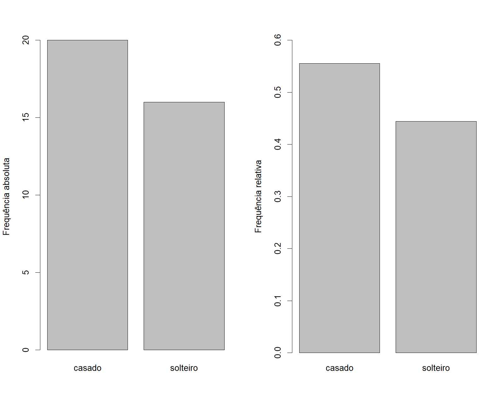
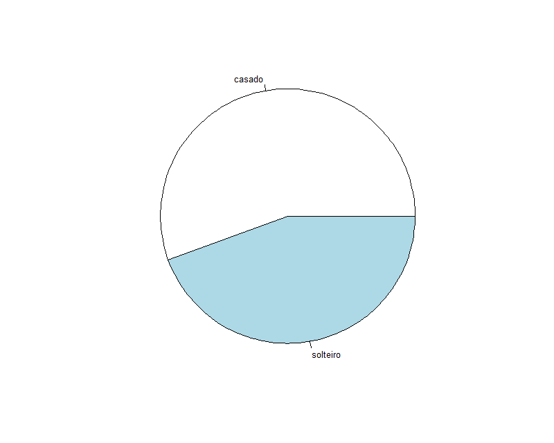
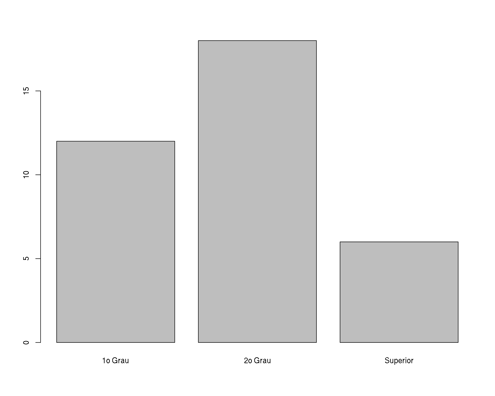
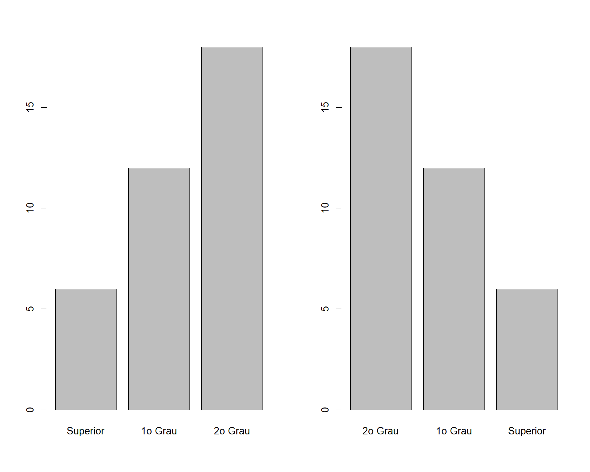
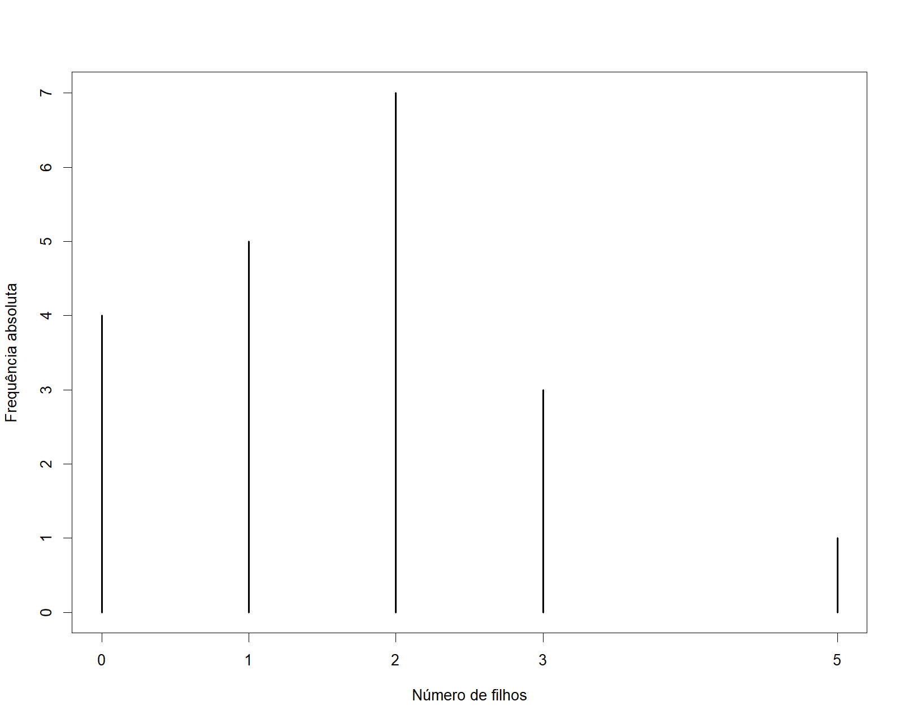
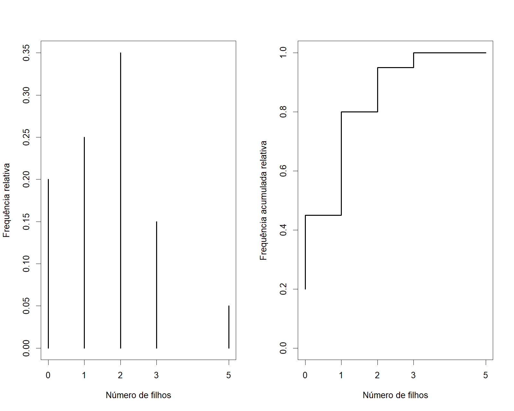
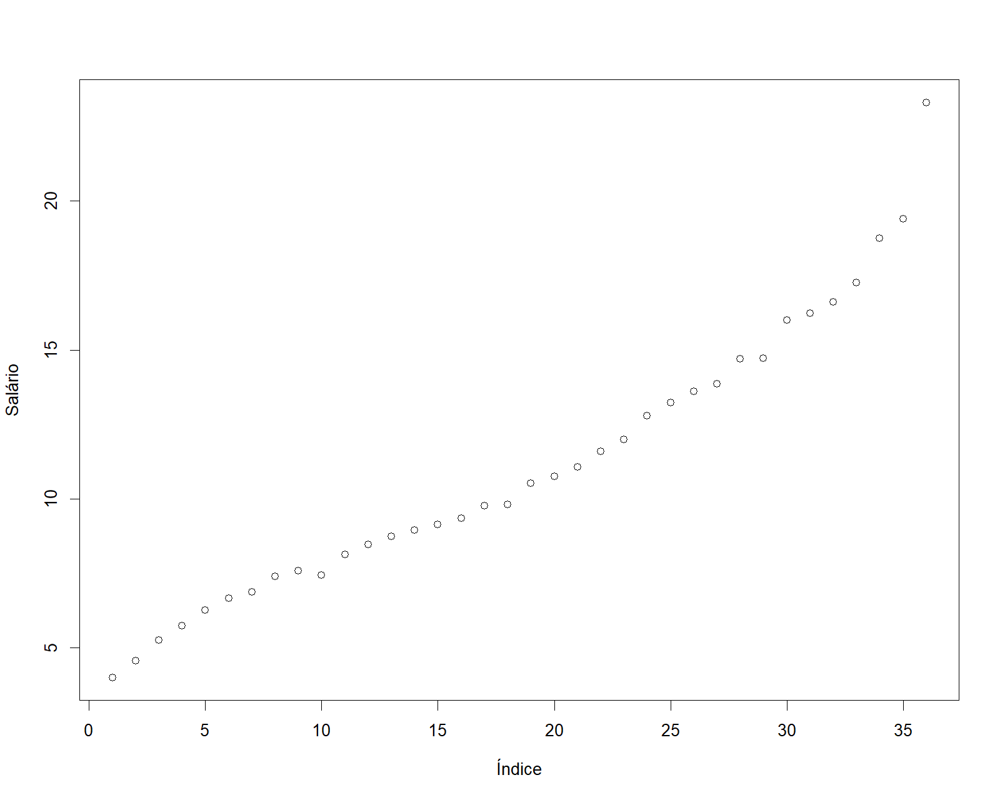
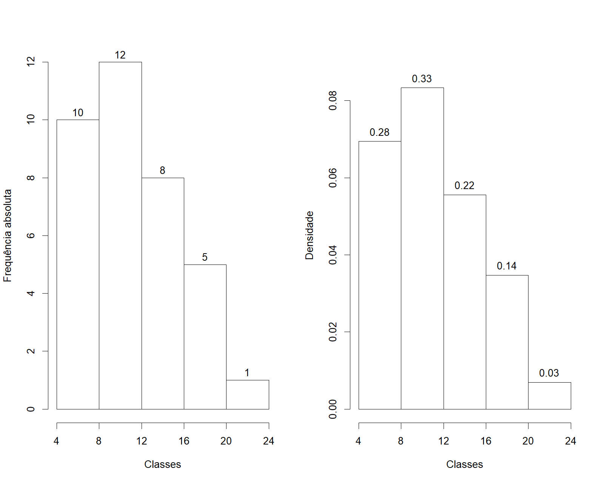

Análise exploratória de dados
Introdução
Nesta sesão vamos ver alguns (mas não todos!) métodos para fazer uma análise exploratória descritiva de um conjunto de dados.
Uma boa forma de iniciar uma análise descritiva adequada é verificar os tipos de de variáveis disponíveis.
Variáveis
Quando fazemos uma amostragem, coletamos não apenas a informação sobre a característica de interesse, mas diversas outras informações que auxiliarão no entendimento desta característica.
Cada uma das características da população amostrada, como peso, altura, sexo ou idade, é denominada de uma variável.
As variáveis podem assumir diferentes valores, que basicamente podem ser separados em
- Quantitativos ou numéricos.
- Qualitativos ou não numéricos, ou categóricos.
Classificação de variáveis
As variáveis quantitativas ou numéricas podem ser
- Discretas: assumem apenas valores inteiros. Ex.: número de irmãos, número de passageiros
- Contínuas: assume qualquer valor no intervalo dos números reais. Ex.: peso, altura
As variáveis qualitativas ou categóricas podem ser
- Nominais: quando as categorias não possuem uma ordem natural. Ex.: nomes, cores, sexo.
- Ordinais: quando as categorias podem ser ordenadas. Ex.: tamanho (pequeno, médio, grande), classe social (baixa, média, alta), grau de instrução (básico, médio, graduação, pós-graduação)

Apresentação e organização de dados
A organização dos dados coletados é fundamental para que não hajam erros de processamento e perda de informações. Deve ser feito em um programa apropriado. Exemplo: planilhas eletrônicas e bancos de dados.
A apresentação dos dados depende do tipo de variável e daquilo que se quer mostrar.
Tabelas e gráficos podem mostrar a mesma informação, mas alguns são mais apropriados dependendo do objetivo.
Existe um número considerável de pacotes estatísticos, alguns específicos para algumas áreas e outros mais gerais. Qualquer que seja o programa a ser utilizado, existem três etapas que envolvem seu uso:
- Entrada de dados.
- Execução da análise estatística.
- Interpretação de resultados.
A entrada de dados deve assumir certas convenções:
- Os dados devem estar no formato de matriz
- Cada linha da matriz corresponde a uma unidade experimental
- Elemento da população ou amostra no qual observamos as variáveis
- Cada coluna da matriz corresponde a uma variável
Dados brutos
Quando fazemos uma coleta de dados, e armazenamos de forma correta, temos em mãos o que se chama de dados brutos, pois consiste das observações “puras”, sem nenhum tipo de processamento ou resumo.
Uma análise de dados sempre deve começar com uma planilha de dados brutos, pois será a partir deles que iremos resumir e visualizar as informações de interesse.
O conjunto de dados milsa
O livro “Estatística Básica” de W. O. Bussab e P. A. Morettin traz no segundo capítulo um conjunto de dados hipotético de atributos de 36 funcionários da companhia “Milsa”. Os dados estão reproduzidos na tabela abaixo.
## Importando os dados para o R
milsa <- read.csv("dados/milsa.csv")| Funcionario | Est.civil | Inst | Filhos | Salario | Anos | Meses | Regiao |
|---|---|---|---|---|---|---|---|
| 1 | solteiro | 1o Grau | NA | 4.00 | 26 | 3 | interior |
| 2 | casado | 1o Grau | 1 | 4.56 | 32 | 10 | capital |
| 3 | casado | 1o Grau | 2 | 5.25 | 36 | 5 | capital |
| 4 | solteiro | 2o Grau | NA | 5.73 | 20 | 10 | outro |
| 5 | solteiro | 1o Grau | NA | 6.26 | 40 | 7 | outro |
| 6 | casado | 1o Grau | 0 | 6.66 | 28 | 0 | interior |
| 7 | solteiro | 1o Grau | NA | 6.86 | 41 | 0 | interior |
| 8 | solteiro | 1o Grau | NA | 7.39 | 43 | 4 | capital |
| 9 | casado | 2o Grau | 1 | 7.59 | 34 | 10 | capital |
| 10 | solteiro | 2o Grau | NA | 7.44 | 23 | 6 | outro |
| 11 | casado | 2o Grau | 2 | 8.12 | 33 | 6 | interior |
| 12 | solteiro | 1o Grau | NA | 8.46 | 27 | 11 | capital |
| 13 | solteiro | 2o Grau | NA | 8.74 | 37 | 5 | outro |
| 14 | casado | 1o Grau | 3 | 8.95 | 44 | 2 | outro |
| 15 | casado | 2o Grau | 0 | 9.13 | 30 | 5 | interior |
| 16 | solteiro | 2o Grau | NA | 9.35 | 38 | 8 | outro |
| 17 | casado | 2o Grau | 1 | 9.77 | 31 | 7 | capital |
| 18 | casado | 1o Grau | 2 | 9.80 | 39 | 7 | outro |
| 19 | solteiro | Superior | NA | 10.53 | 25 | 8 | interior |
| 20 | solteiro | 2o Grau | NA | 10.76 | 37 | 4 | interior |
| 21 | casado | 2o Grau | 1 | 11.06 | 30 | 9 | outro |
| 22 | solteiro | 2o Grau | NA | 11.59 | 34 | 2 | capital |
| 23 | solteiro | 1o Grau | NA | 12.00 | 41 | 0 | outro |
| 24 | casado | Superior | 0 | 12.79 | 26 | 1 | outro |
| 25 | casado | 2o Grau | 2 | 13.23 | 32 | 5 | interior |
| 26 | casado | 2o Grau | 2 | 13.60 | 35 | 0 | outro |
| 27 | solteiro | 1o Grau | NA | 13.85 | 46 | 7 | outro |
| 28 | casado | 2o Grau | 0 | 14.69 | 29 | 8 | interior |
| 29 | casado | 2o Grau | 5 | 14.71 | 40 | 6 | interior |
| 30 | casado | 2o Grau | 2 | 15.99 | 35 | 10 | capital |
| 31 | solteiro | Superior | NA | 16.22 | 31 | 5 | outro |
| 32 | casado | 2o Grau | 1 | 16.61 | 36 | 4 | interior |
| 33 | casado | Superior | 3 | 17.26 | 43 | 7 | capital |
| 34 | solteiro | Superior | NA | 18.75 | 33 | 7 | capital |
| 35 | casado | 2o Grau | 2 | 19.40 | 48 | 11 | capital |
| 36 | casado | Superior | 3 | 23.30 | 42 | 2 | interior |
Estes dados estão disponíveis em um arquivo csv no endereço http://www.leg.ufpr.br/~fernandomayer/dados/milsa.csv.
csv é um arquivo de texto (assim como um txt), mas as colunas de um conjunto de dados são separados por vírgula (csv = comma separated values). Arquivos de texto como esse podem ser abertos em qualquer editor de texto, e também em planilhas eletrônicas.
O nosso objetivo agora é então fazer uma análise descritiva destes dados, com a intenção de se identificar padrões e relações (se houverem).
Portanto, o primeiro passo é classificar todas as variáveis desse conjunto de dados:
| Variável | Classificação |
|---|---|
Funcionario |
Quantitativa discreta |
Est.civil |
Qualitativa nominal |
Inst |
Qualitativa ordinal |
Filhos |
Quantitativa discreta |
Salario |
Quantitativa contínua |
Anos |
Quantitativa discreta |
Meses |
Quantitativa discreta |
Regiao |
Qualitativa nominal |
Naturalmente as variáveis Anos e Meses, por se tratarem de tempo, são contínuas. No entanto, da maneira como foram coletadas, nós podemos classificá-las como discretas, sem muita perda de informação. Esse processo é denominado de discretização de uma variável contínua, e pode ser utilzado em pelo menos dois casos:
- Quando não há perda de informação ao discretizar a variável (como nesse caso), ou quando o detalhamento não é fundamental para o entendimento da característica.
- Quando uma variável contínua é medida por um equipamento que não é capaz de mensurar com uma determinada precisão. Por exemplo, se o peso de uma pessoa for medido por uma balança que só mede em escala de 1 em 1 kg, o peso seria considerado como variável discreta mesmo que saibamos que de fato é contínua.
Estes são dados no “estilo planilha”, com variáveis de diferentes tipos: categóricas e numéricas (qualitativas e quantitativas). Portanto segue as normas que estabelecemos anteriormente:
- Cada linha corresponde a uma unidade amostral, nesse caso à uma pessoa
- Cada coluna corresponde a uma variável diferente
NOTE algumas coisas importantes:
- Cada variável possui um tipo de resposta, e estas respostas seguem sempre o mesmo padrão. Por exemplo, na variável
Est.civilas possíveis respostas são:solteiroecasado. Se por acaso houvesse o termoCasado, poderia haver confusão na maioria dos pacotes estatísticos, e este termo poderia ser (erroneamente) uma terceira categoria de resposta. - Quando a informação de uma (ou mais) variáveis não estiver disponível (por exemplo: falta de resposta, rasura na marcação da resposta, ou simplesmente não foi possível coletar aquela informação para aquele indivíduo), esta informação deve ser marcada (ou indicada) com algum símbolo especial. Em planilhas eletrônicas, normalmente a célula fica em branco, mas na maioria dos pacotes estatísticos é necessário preencher estas células com um símbolo (que varia entre os pacotes). Aqui, por exemplo, usamos o símbolo
NA(deNotAvailable) para indicar estas observações.
Agora que os dados estão prontos podemos começar a análise descritiva. A seguir mostramos como fazer análises descritivas uni e bi-variadas. Sugiro ainda que você use algum programa ou pacote estatístico para reproduzir os resultados mostrados aqui.
Análise univariada
A análise univariada consiste basicamente em, para cada uma das variáveis individualmente:
- Classificar a variável quanto a seu tipo: qualitativa (nominal ou ordinal) ou quantitativa (discreta ou contínua)
- Obter tabelas, gráficos e/ou medidas que resumam a variável
A partir destes resultados pode-se montar um resumo geral dos dados. Quando se estuda uma variável, o maior intersse do pesquisador é conhecer o comportamento dessa variável, analisando a ocorrência de suas possíveis realizações. Nesse sentido, as distribuições de frequência serão o principal recurso que utilizaremos para resumir uma única variável.
A seguir vamos mostrar como obter tabelas e gráficos simples. Para isto vamos selecionar uma variável de cada tipo para que o leitor possa, por analogia, obter resultados para as demais.
Variável Qualitativa Nominal
A variável Est.civil é uma qualitativa nominal. Desta forma podemos obter:
- Uma tabela de frequências (absolutas e/ou relativas)
- Um gráfico de barras ou de setores
- A “moda”, i.e. o valor que ocorre com maior frequência
Por ser uma variável qualitativa, para obter a distribuição de frequência desta variável, basta contarmos quantas vezes ocorre cada categoria (ou nível), e organizar em uma tabela.
civil.tb <- table(milsa$Est.civil)
cbind("f" = civil.tb) f
casado 20
solteiro 16Esta simples contagem é chamada de frequência absoluta. Podemos também incluir nessa tabela a soma total de observações de todas as categorias.
cbind("f" = addmargins(civil.tb)) f
casado 20
solteiro 16
Sum 36Com essa informação adicional, podemos agora calcular a frequência relativa, ou seja, a frequência absoluta de cada categoria, dividida pelo total.
cbind("fr" = prop.table(civil.tb)) fr
casado 0.5555556
solteiro 0.4444444Note que, nesse caso, a soma das categorias deve somar 1 (ou 100%)
cbind("fr" = addmargins(prop.table(civil.tb))) fr
casado 0.5555556
solteiro 0.4444444
Sum 1.0000000Com isso, podemos definir alguns tipos de frequência.
- Frequência absoluta (\(f_i\)): número total de elementos em cada classe
- Frequência relativa (\(fr_i\)): razão entre cada valor da frequência absoluta e o total de observações \[ fr_i = \frac{f_i}{\sum f_i} \]
- Frequência percentual (\(fp_i\)): frequência relativa em porcentagem \[ fp_i = fr_i \times 100 \]
Os gráficos de barras e de setores são adequados para representar esta variável. O gráfico de barras é formado pelas categorias no eixo X, e pela frequência no eixo Y. A frequência utilizada pode ser tanto a absoluta quanto a relativa, conforme for o caso.
par(mfrow = c(1, 2))
barplot(civil.tb, ylab = "Frequência absoluta")
barplot(prop.table(civil.tb), ylab = "Frequência relativa",
ylim = c(0, .6))
par(mfrow = c(1,1))
O gráfico de setores (ou de pizza, ou torta, ou diagrama circular) também pode ser utilizado, mas apresenta uma maior limitação. Independente da frequência utilizada, cada setor terá a mesma área. Além disso, quando existem muitas categorias, e/ou as categorias possuem frequências semelhantes, a diferenciação dos setores é dificultada.
pie(civil.tb)
A moda de qualquer variável é definida como o valor mais frequente encontrado na amostra. No caso de variáveis qualitativas, a moda é a categoria que apresenta maior frequência. Nesse exemplo, a moda seria então
names(civil.tb)[which.max(civil.tb)][1] "casado"Variável Qualitativa Ordinal
Para exemplificar como obter análises para uma variável qualitativa ordinal vamos selecionar a variável Inst, que verificou o grau de instrução dos funcionários.
As tabelas de frequências são obtidas de forma semelhante à mostrada anteriormente. A frequência absoluta é a contagem do número de vezes que cada categoria foi observada. Note que aqui, a ordem tem importância, portanto, a tabela também deve seguir a ordem natural das categorias. Abaixo, mostramos a tabela de frequência absoluta já com o somatório de todas as classes.
inst.tb <- table(milsa$Inst)
cbind("f" = addmargins(inst.tb)) f
1o Grau 12
2o Grau 18
Superior 6
Sum 36As frequências relativas também são obtidas através da divisão da frequência absoluta de cada classe pelo total, ou seja,
cbind("f" = addmargins(inst.tb),
"fr" = addmargins(prop.table(inst.tb))) f fr
1o Grau 12 0.3333333
2o Grau 18 0.5000000
Superior 6 0.1666667
Sum 36 1.0000000O gráfico de setores não é adequado para este tipo de variável por não expressar a ordem dos possíveis valores. Usamos então apenas um gráfico de barras conforme mostrado abaixo
barplot(inst.tb)
Em alguns casos podemos querer mostrar o gráfico de barras com as barras classificadas da menor para a maior, ou vice-versa, independente da ordem dos níveis. O importante é sempre deixar claro as categorias de cada barra.
par(mfrow = c(1,2))
## Menor para maior
barplot(sort(inst.tb))
## Maior para menor
barplot(sort(inst.tb, decreasing = TRUE))
par(mfrow = c(1,1))
Para uma variável ordinal, a moda também é especificada como a categoria de maior frequência, ou seja,
names(inst.tb)[which.max(inst.tb)][1] "2o Grau"Variável quantitativa discreta
Vamos agora usar a variável Filhos (número de filhos) para ilustrar algumas análises que podem ser feitas com uma quantitativa discreta.
Frequências absolutas e relativas são obtidas como anteriormente. Nesse caso, assumimos que cada valor numérico é uma categoria, e construímos as tabelas de frequência como se a variável fosse qualitativa ordinal. Note, no entanto, que quando existem poucos valores numéricos, essa abordagem é viável. Mas contagens podem assumir muitos valores diferentes, e nesses casos, fazer uma tabela de frequência pode não ajudar a resumir aquela variável. Quando esse for o caso, adotaremos a mesma técnica que usamos para resumir variáveis quantitativas contínuas, como veremos na próxima sessão.
Abaixo, temos a frequência absoluta, com o total de observações
filhos.tb <- table(milsa$Filhos)
cbind("f" = addmargins(filhos.tb)) f
0 4
1 5
2 7
3 3
5 1
Sum 20Note que a soma foi 20, ao invés das 36 observações totais da planilha original. Como você deve imaginar ao ter inspecionado a tabela, isso ocorre pelo fato de que existem algumas observações perdidas para essa variável. Mais especificamente, existem 16 observações faltantes, aquelas marcadas com NA. Se for desejável, pode-se incluir a contagem de observações faltantes na tabela de frequência.
cbind("f" = addmargins(table(milsa$Filhos, useNA = "always"))) f
0 4
1 5
2 7
3 3
5 1
<NA> 16
Sum 36Por ora, vamos usar a tabela de frequência sem a contagem destes valores perdidos. Nestes casos, é importante ter cuidado com as frequências relativas, que devem ser calculadas com o total da tabela, e não com o total de observações. Portanto, para esse exemplo, as frequências relativas seriam
cbind("f" = addmargins(filhos.tb),
"fr" = addmargins(prop.table(filhos.tb))) f fr
0 4 0.20
1 5 0.25
2 7 0.35
3 3 0.15
5 1 0.05
Sum 20 1.00Para variáveis cujos valores possuem ordenação natural (qualitativas ordinais e quantitativas em geral), faz sentido calcularmos também as frequências acumuladas. A frequência acumulada até um certo valor é obtida pela soma das frequências de todos os valores da variável, menores ou iguais ao valor considerado.
filhos.tba <- as.table(cumsum(filhos.tb))
cbind("f" = addmargins(filhos.tb),
"fr" = addmargins(prop.table(filhos.tb)),
"F" = c(filhos.tba, NA)) f fr F
0 4 0.20 4
1 5 0.25 9
2 7 0.35 16
3 3 0.15 19
5 1 0.05 20
Sum 20 1.00 NATambém podemos definir a frequência acumulada relativa, que é o resultado da divisão das frequências acumuladas pelo total de observações, ou seja
filhos.tba <- as.table(cumsum(filhos.tb))
cbind("f" = addmargins(filhos.tb),
"fr" = addmargins(prop.table(filhos.tb)),
"F" = c(filhos.tba, NA),
"Fr" = c(filhos.tba/20, NA)) f fr F Fr
0 4 0.20 4 0.20
1 5 0.25 9 0.45
2 7 0.35 16 0.80
3 3 0.15 19 0.95
5 1 0.05 20 1.00
Sum 20 1.00 NA NACom isso, definimos também as frequências acumuladas.
- Frequência acumulada (\(F_i\)): soma das frequências simples de uma classe com a frequência simples da classe anterior
- Frequência acumulada relativa (\(Fr_i\)): frequência acumulada da classe dividida pelo total de observações \[ Fr_i = \frac{F_i}{\sum f_i} \]
- Frequência acumulada percentual (\(Fp_i\)): frequência acumulada relativa em porcentagem \[ Fp_i = Fr_i \times 100 \]
O gráfico adequado para frequências absolutas, relativas, ou acumuladas de uma variável discreta é parecido com um gráfico de barras, mas nesse caso, as frequências são indicadas por linhas.
plot(filhos.tb, xlab = "Número de filhos",
ylab = "Frequência absoluta")
Outra possibilidade seria fazer gráficos de frequências relativa e de frequências relativas acumuladas conforme mostrado nas figuras abaixo.
par(mfrow = c(1,2))
## Frequência relativa
plot(prop.table(filhos.tb), xlab = "Número de filhos",
ylab = "Frequência relativa")
## Frequência relativa acumulada
plot(filhos.tba/20, type = "S", # tipo step (escada)
xlab = "Número de filhos",
ylab = "Frequência acumulada relativa")
par(mfrow = c(1,1))
Variável quantitativa contínua
Para concluir os exemplos para análise univariada vamos considerar a variável quantitativa contínua Salario.
Para se fazer uma tabela de frequências de uma variável contínua, é preciso primeiro agrupar os dados em classes pré-estabelecidas. A escolha dos intervalos de classe geralmente é arbitrária, e a familiaridade do pesquisador com os dados é que lhe indicará quantas e quais classes devem ser utilizadas. No entanto, algumas regras simples podem ser úteis para auxiliar na construção das classes. Uma forma seria calcular a amplitude de classe (\(h\)) através da relação
\[ h = \frac{AT}{k} \]
onde \(AT = \max{\mathbf{x}} - \min{\mathbf{x}}\) é a amplitude total dos dados, e \(k = \sqrt{n}\) é um número estimado de intervalos de classes para um conjunto de dados com \(n\) observações (\(k\) pode ser calculado por outras definições, como a regra de Sturges, por exemplo).
Note que, para facilitar o cálculo da amplitude de classe e posteriormente para montar a tabela de distribuição de frequência, podemos ordenar o vetor de dados brutos. Por exemplo, os valores ordenados (em ordem crescente) de Salario são
sort(milsa$Salario) [1] 4.00 4.56 5.25 5.73 6.26 6.66 6.86 7.39 7.44 7.59 8.12
[12] 8.46 8.74 8.95 9.13 9.35 9.77 9.80 10.53 10.76 11.06 11.59
[23] 12.00 12.79 13.23 13.60 13.85 14.69 14.71 15.99 16.22 16.61 17.26
[34] 18.75 19.40 23.30Com isso, naturalmente já visualizamos os valores máximo e mínimo, e sabemos que a amplitude total é
\[ AT = 23.3 - 4 = 19.3 \]
Como temos 36 observações, o número estimado de classes é \(k = \sqrt{n} = \sqrt{36} = 6\). Portanto, a amplitude de classe é
\[ h = \frac{AT}{k} = \frac{19.3} {6} = 3.2166667 \]
O valor de amplitude de classe pode ser arredondado para um número inteiro, geralmente para facilitar a interpretação da tabela. Nesse caso, poderíamos arredondar a amplitude para 3 ou para 4 (inteiros mais próximos). Como o valor mínimo é 4 e o máximo está próximo de 24, é natural arredondarmos a amplitude para 4. Após esse arredondamento, vamos denominar a amplitude de classe definitiva por \(\Delta\), apenas para diferenciar do valor calculado em \(h\).
Dessa forma, as classes seriam formadas pela sequência, ou “quebra de classes” definida por
(quebra <- seq(4, 24, 4))[1] 4 8 12 16 20 24Portanto, ficamos com um total de 5 classes. A última etapa é definir os extremos de classe que serão abertos (permitem incluir aquele valor exato) ou fechados (não incluem aquele valor). Para isso, usaremos a notação a seguir
| Classe | Notação | Denominação | Resultado |
|---|---|---|---|
| [a,b) | \(a \vdash b\) | Fechado em a, aberto em b | Inclui a, não inclui b |
| (a,b] | \(a \dashv b\) | Aberto em a, fechado em b | Não inclui a, inclui b |
Nesse exemplo, vamos usar intervalos do tipo fechados à esquerda (abertos à direita), pois o primeiro valor de quebra de classe é o igual ao valor mínimo do conjunto de dados, e dessa forma garantimos que todos os valores pertençam a alguma das classes.
Portanto, as classes completas com suas respectivas frequências absolutas estão na tabela abaixo.
classes <- cut(milsa$Salario, breaks = quebra, right = FALSE)
classes.tab <- table(classes)
cbind("f" = addmargins(classes.tab)) f
[4,8) 10
[8,12) 12
[12,16) 8
[16,20) 5
[20,24) 1
Sum 36Para completar esta tabela, podemos obter os demais tipos de frequência, conforme visto anteriormente: \(f_r\) (frequência relativa), \(F\) (frequência acumulada), e \(F_r\) (frequência acumulada relativa).
cbind("f" = addmargins(classes.tab),
"fr" = addmargins(prop.table(classes.tab)),
"F" = c(cumsum(classes.tab), NA),
"Fr" = c(cumsum(classes.tab), NA)/36) f fr F Fr
[4,8) 10 0.27777778 10 0.2777778
[8,12) 12 0.33333333 22 0.6111111
[12,16) 8 0.22222222 30 0.8333333
[16,20) 5 0.13888889 35 0.9722222
[20,24) 1 0.02777778 36 1.0000000
Sum 36 1.00000000 NA NANa sequência vamos mostrar três possíveis gráficos para variáveis contínuas: o de dispersão, o histograma, e o de ramo-e-folhas.
O gráfico de dispersão unidimensional consiste da variável de interesse no eixo Y, plotada com seus respectivos índices (entrada) da tabela de dados. Nesse exemplo, o gráfico seria
plot(milsa$Salario, xlab = "Índice", ylab = "Salário")
Note que, como os dados nesta tabela estão ordenados (em ordem crescente) pelos salários, então vemos esse padrão de cresimento. Mas a ordenação não é um pré-requisito para fazer esse gráfico. A interpretação desse gráfico é limitada pelo fato de que só faz sentido dizer alguma coisa sobre os salários se os índices (nesse caso, os funcionários) tivessem algum tipo de identificação. Por esse motivo, o histograma é uma forma mais eficiente de resumir variáveis contínuas.
O histograma é um gráfico de barras contíguas, com as bases proporcionais aos intervalos de classe, e a área de cada retângulo proporcional à respectiva frequência.
Pode-se usar tanto a frequêcia absoluta (\(f_i\)) quanto a relativa (\(fr_i\)). Indicamos a amplitude do \(i\)-ésimo intervalo por \(\Delta_i\). Para que a área do retângulo respectivo seja proporcional a \(fr_i\), a sua altura deve ser proporcional a \(fr_i/\Delta_i\), que é chamada densidade de frequência, ou simplesmente densidade da \(i\)-ésima classe. Quando todos os intervalos de classe forem iguais a \(\Delta\) (como é o caso nesse exemplo), então a densidade de frequência simplifica para \(fr_i/\Delta\). Com essa convenção, garantimos que a área total do histograma será igual a um, uma propriedade que será importante quando estudarmos probabilidade.
Abaixo, vemos os histogramas com as frequências absolutas, e com a densidade de frequência.
par(mfrow = c(1,2))
hist(milsa$Salario, breaks = quebra, right = FALSE, main = "",
xlab = "Classes", ylab = "Frequência absoluta",
xlim = c(4, 24), labels = TRUE, axes = FALSE)
axis(1, at = quebra, labels = quebra); axis(2)
h <- hist(milsa$Salario, breaks = quebra, right = FALSE, main = "",
xlab = "Classes", ylab = "Densidade",
xlim = c(4, 24), ylim = c(0, .09), freq = FALSE, axes = FALSE)
axis(1, at = quebra, labels = quebra); axis(2)
text(h$mids, h$density, labels = round(h$density * 4, 2), pos = 3)
par(mfrow = c(1,1))
Note que, para construir o gráfico com as densidades, precisamos então de mais uma coluna na tabela, que seria a densidade \(fr_i/\Delta = fr_i/4\).
cbind("f" = addmargins(classes.tab),
"fr" = addmargins(prop.table(classes.tab)),
"F" = c(cumsum(classes.tab), NA),
"Fr" = c(cumsum(classes.tab), NA)/36,
"Dens" = c(prop.table(classes.tab)/4, NA)) f fr F Fr Dens
[4,8) 10 0.27777778 10 0.2777778 0.069444444
[8,12) 12 0.33333333 22 0.6111111 0.083333333
[12,16) 8 0.22222222 30 0.8333333 0.055555556
[16,20) 5 0.13888889 35 0.9722222 0.034722222
[20,24) 1 0.02777778 36 1.0000000 0.006944444
Sum 36 1.00000000 NA NA NAO que devemos observar em um histograma:
- Amplitude de valores
- Forma da distribuição (assimetria):
- Positiva
- Negativa
- Simétrica
- Tendência central
- Valores extremos
Tanto o histograma quanto os gráficos de barra, dão uma ideia da forma da distribuição de uma variável. Existem várias medidas para resumir uma variável, como veremos mais adiante, mas a forma da distribuição é tão importante quanto estas medidas. Por exemplo, saber que a média de salários da empresa “Milsa” é 11.12 é importante, mas saber como os salários se distribuem entre os funcionários da empresa (como vimos pelo histograma) pode ser mais importante.
Outro método para se resumir uma variável com o objetivo de obter uma ideia da forma de sua distribuição, é através do “gráfico” de ramo-e-folhas. Este é um método bem simples, e foi criado na época em que fazer gráficos no computador era uma tarefa difícil. Mas ainda hoje é uma forma de visualização muito efetiva. Uma vantagem sobre o histograma é que não perdemos (ou perdemos muito pouca) informação sobre os dados em si.
Não existe uma regra fixa para construir o ramo-e-folhas, mas a ideia básica é dividir cada observação em duas partes: a primeira (o ramo) é colocada no lado esquerdo de uma linha vertical, e a segunda (a folha) é colocada à direita. Geralmente, a divisão natural é separar um número contínuo em sua parte inteira à esquerda, e a parte decimal à direita. Dessa forma o ramo-e-folha para a variável Salario está abaixo.
stem(milsa$Salario, scale = 2)
The decimal point is at the |
4 | 06
5 | 37
6 | 379
7 | 446
8 | 1579
9 | 1388
10 | 58
11 | 16
12 | 08
13 | 268
14 | 77
15 |
16 | 026
17 | 3
18 | 8
19 | 4
20 |
21 |
22 |
23 | 3Note que, por simplificação, os valores foram arredondados para uma casa decimal, assim, por exemplo, o segundo valor de 4,56 foi arredondado para 4,6, e representado na primeira linha do gráfico, junto com o primeiro valor que é 4,0.
Algumas informações que podemos obter a partir do ramo-e-folhas:
- Há um destaque para o valor 23,3.
- Os demais valores se concentram mais fortemente entre 4,0 e 14,7.
- Um valor mais ou menos típico para essa variável seria em torno de 9.
- Há uma leve assimetria em direção aos valores grandes.
Existem diversas variações do gráfico de ramo-e-folhas, mas não entraremos em detalhes.
Exercícios
- Em um questionário aplicado aos estudantes que frequentavam a livraria do campus, foi perguntado como classificariam o serviço prestado. As respostas foram:
ex <- c("ótimo", "bom", "bom", "péssimo", "bom", "bom", "ótimo",
"ótimo", "bom", "ótimo", "bom", "ótimo", "bom", "bom", "ótimo",
"bom", "péssimo", "bom", "péssimo", "bom", "péssimo", "bom", "bom",
"bom", "bom", "ótimo", "bom", "péssimo", "ótimo", "ótimo", "bom",
"péssimo")
ex [1] "ótimo" "bom" "bom" "péssimo" "bom" "bom" "ótimo"
[8] "ótimo" "bom" "ótimo" "bom" "ótimo" "bom" "bom"
[15] "ótimo" "bom" "péssimo" "bom" "péssimo" "bom" "péssimo"
[22] "bom" "bom" "bom" "bom" "ótimo" "bom" "péssimo"
[29] "ótimo" "ótimo" "bom" "péssimo"- Como você classificaria estas respostas?
- Crie uma tabela e um gráfico para representar e resumir esta informação.
- Considere os dados abaixo
ex1 <- c(11,13,10,9,0,16,28,15,14,1,2,17,
18,12,18,8,9,22,16,20,34,15,21,13,
12,14,13,19,0,2,17,11,18,16,13,6,
19,8,8,12,13,21,11,19,1,14,4,16)
sort(ex1) [1] 0 0 1 1 2 2 4 6 8 8 8 9 9 10 11 11 11 12 12 12 13 13 13
[24] 13 13 14 14 14 15 15 16 16 16 16 17 17 18 18 18 19 19 19 20 21 21 22
[47] 28 34- Monte uma tabela construindo as classes conforme os critérios apresentados.
- Calcule as frequências: absoluta, relativa, percentual, acumulada, acumulada relativa, acumulada percentual.
- Faça um histograma com a densidade das classes.
- Faça um diagrama de ramo-e-folhas.

Este conteúdo está disponível por meio da Licença Creative Commons 4.0